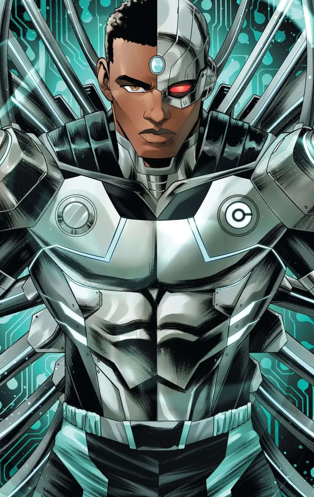
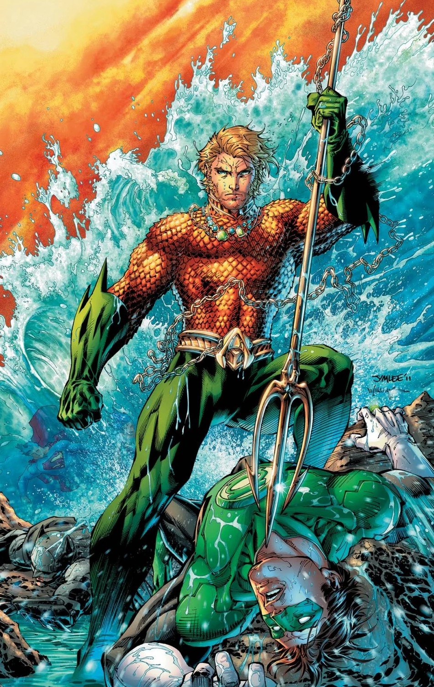
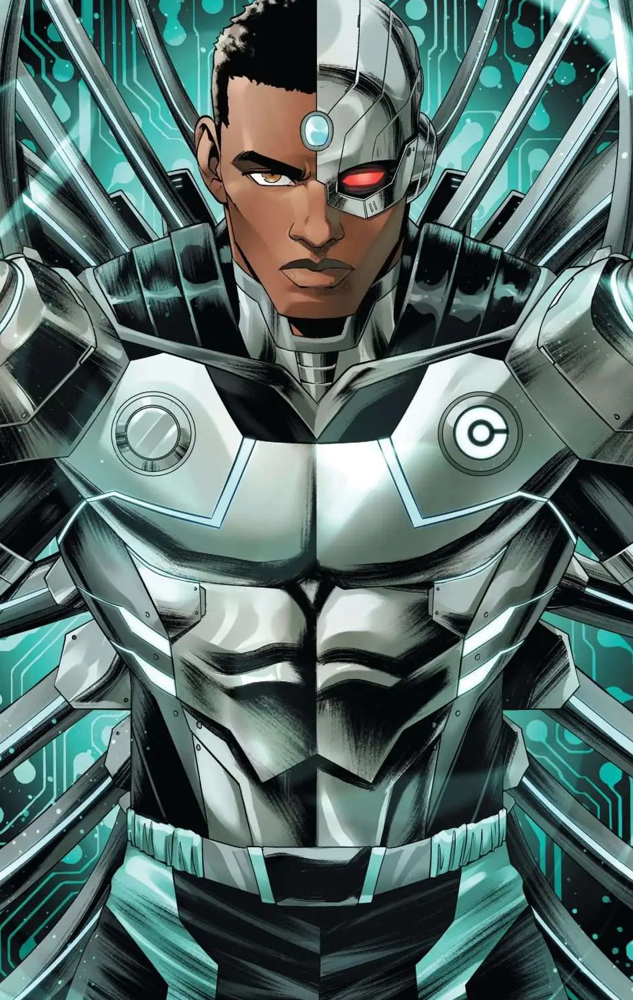
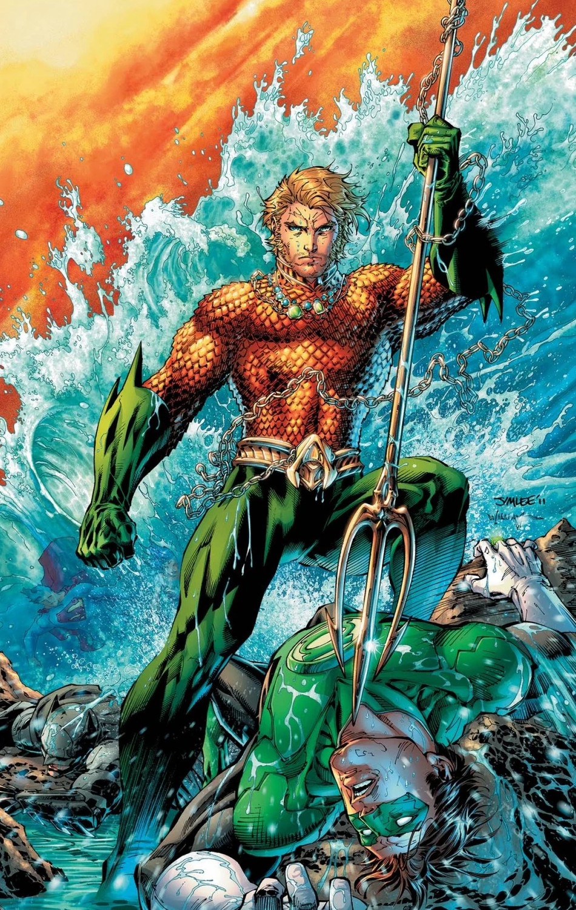

Faster than a speeding bullet, more powerful than a locomotive… The Man of Steel fights a never-ending battle for truth, justice, and the American way.
Batman
One of the most iconic fictional characters in the world, Batman has dedicated his life to an endless crusade, a war on all criminals in the name of his murdered parents, who were taken from him when he was just a child. Since that tragic night, he has trained his body and mind to near physical perfection to be a self-made Super Hero. He's developed an arsenal of technology that would put most armies to shame. And he's assembled teams of his fellow DC Super Heroes, like the Justice League, the Outsiders and Batman Incorporated.
The Flash
The mysterious power known as the Speed Force is an energy field that has, over the centuries, granted incredible powers of velocity to certain heroes. The most famous of these is the Flash, also known as the Fastest Man Alive. Ever since the days of World War II, there has been a man clad in red who can run at impossible speeds, using his power to save lives and defend those who cannot defend themselves. All between the ticks of a second.
Wonder Woman
One of the most beloved and iconic DC Super Heroes of all time, Wonder Woman has stood for nearly eighty years as a symbol of truth, justice and equality to people everywhere. Raised on the hidden island of Themyscira, also known as Paradise Island, Diana is an Amazon, like the figures of Greek legend, and her people's gift to humanity.
Green Lantern
Test pilot Hal Jordan went from being a novelty, the first-ever human Green Lantern, to one of the most legendary Lanterns to ever wield a power ring.
Green Arrow
Billionaire Oliver Queen uses both his wealth and his unmatched archery skills as the Justice League's battling bowman, Green Arrow.
Cyborg
Part man, part machine, Vic Stone is a former member of the Teen Titans and a current member of the Justice League who wrestles to preserve his humanity with every new upgrade.
Aquaman
The son of a lighthouse keeper and an Atlantean queen, Arthur Curry is the bridge between the surface world and his tumultuous realm of the sea.


 


